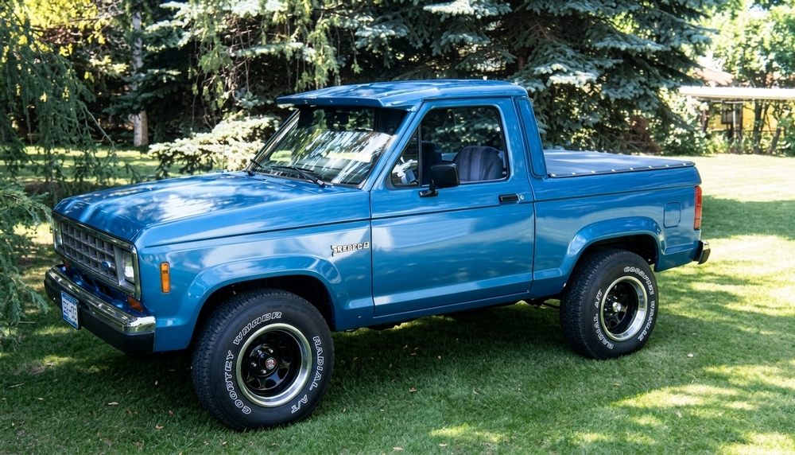

This is the second Bronco ll I converted to a pickup, It was a 1986 with a 2.9 v-6,and an automatic transmission. It was not as rusty as the first one. The 1986 was the first year for the 2.9 fuel injected engine in the Bronco ll.
